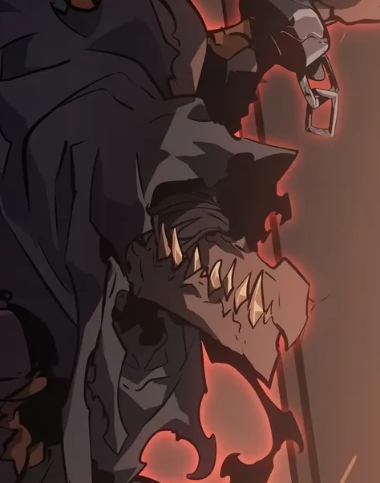

Ammut
Affiliation: Monarchs
Class: S Rank
Parents: Unknown
Biography
Ammut was a prison of the pytamid field and a former associate of Tarnak the Monarch of the Iron Body.
Abilities
-
🔸 Devourer of Souls
Ammut has the ability to consume the essence of his enemies, growing stronger with each soul he devours. This makes his a relentless force on the battlefield.
-
🔸 Unmatched Durability
His hybrid nature grants his immense physical resilience, making him nearly impervious to physical and magical attacks.
-
🔸 Fear Induction
His mere presence instills fear in his enemies, weakening their resolve and making them easier to defeat.